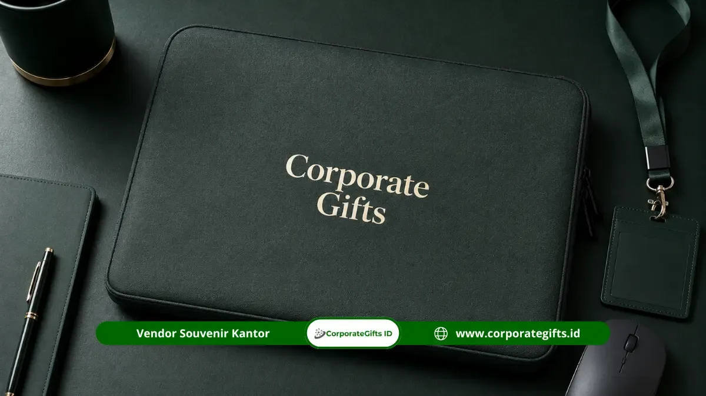

Corporate Gifts ID - Tas dan pouch custom logo adalah pilihan souvenir fungsional perusahaan terbaik yang menawarkan area cetak luas untuk kebutuhan branding maksimal. Produk ini secara konsisten meningkatkan visibilitas merek melalui fungsionalitas harian, mencakup tote bag kanvas, backpack laptop eksekutif, dan pouch organizer multifungsi.
Poin Kunci Tas & Pouch Custom Logo:
- Area Cetak Paling Luas: Menyediakan permukaan penempatan logo paling lapang dibanding souvenir lain sehingga mudah terlihat dari kejauhan.
- Pilihan Model Fleksibel: Tote bag kanvas, pouch gadget organizer, dan backpack laptop eksekutif menjadi opsi terfavorit.
- Fungsi Kompartemen Rapi: Memudahkan penyimpanan kabel, kartu, laptop, dan dokumen kerja penerima.
- Daya Tahan Tinggi: Jahitan bartack dan material kanvas atau kulit sintetis menjamin pemakaian tahan lama.
Permintaan tas custom sebagai souvenir kantor terus stabil sepanjang tahun karena fungsinya yang universal. Hampir setiap profesional aktif membutuhkan tas untuk membawa perlengkapan kerja, gawai pendukung, maupun kebutuhan perjalanan dinas.
Tas dan Pouch Sebagai Media Promosi Berjalan yang Efektif
Tas dan pouch terbukti sangat efektif sebagai media promosi bergerak (walking billboard) karena dimensinya yang lapang untuk menonjolkan identitas visual institusi:
Fleksibilitas Penggunaan dari Acara Formal hingga Keseharian
Tas custom logo dapat digunakan penerima dalam beragam situasi, mulai dari membawa berkas ke ruang pertemuan, membawa laptop saat rapat klien, hingga menjadi wadah belanja kasual di akhir pekan. Fleksibilitas ini menjadikan tas sebagai salah satu souvenir yang paling sering benar-benar dipakai dibanding benda yang sekadar disimpan di laci meja.
Semakin sering tas dipakai di tempat umum, semakin luas pula jangkauan audiens yang terpapar oleh logo dan identitas perusahaan Anda.
Area Cetak Logo Luas untuk Visibilitas Brand Maksimal
Dibandingkan benda berukuran mungil seperti pulpen metal atau flashdisk custom, tas dan pouch menawarkan permukaan yang sangat luas. Hal ini membuat logo dapat ditampilkan dalam ukuran proporsional, jelas terbaca, serta memungkinkan penambahan tagline maupun motif corak korporat tanpa terlihat sesak.
Ragam Pilihan Tas dan Pouch Kustom di Corporate Gifts
CorporateGifts.ID menghadirkan pilihan tas dan pouch kustom yang dirancang sesuai kebutuhan profesional modern:
- Pouch Gadget & Clutch Organizer: Memiliki kompartemen khusus kabel charger, flashdisk, adaptor, dan powerbank, sangat ringkas untuk perjalanan dinas.
- Tote Bag Kanvas Premium: Material kanvas tebal dengan jahitan kuat, mampu menahan beban laptop dan berkas kerja harian.
- Backpack Laptop Eksekutif: Dilengkapi kompartemen berbusa tebal (padded laptop sleeve) dan material water-resistant untuk keamanan perangkat elektronik.
- Sling Bag Travel Ringkas: Desain dinamis untuk staf lapangan yang membutuhkan akses cepat ke ponsel, paspor, dan dompet.
- Laptop Sleeve Custom: Pelindung laptop minimalis berbahan kulit sintetis atau neoprena tahan benturan dengan sentuhan deboss logo mewah.

Penerapan teknik bordir presisi dan sablon berkualitas tinggi pada material kanvas dan kulit sintetis.
Tabel Komparasi Karakteristik Model Tas Souvenir
Berikut perbandingan karakter dan kegunaan masing-masing varian tas untuk mempermudah pemilihan paket cinderamata kantor Anda:
| Jenis Tas / Pouch | Material Utama | Keunggulan Utama | Rekomendasi Penggunaan |
|---|---|---|---|
| Tote Bag Kanvas | Kanvas katun 10-12 oz / Baby canvas | Ramah lingkungan, muat banyak, kasual & trendy | Paket seminar kit, onboarding staf, goody bag event |
| Pouch Organizer Gadget | Cordura / Kulit sintetis PU / Dinir | Banyak saku jaring, rapi, tahan cipratan air | Hadiah pelatihan teknis, merchandise travel kerja |
| Backpack Laptop | Polyester 600D / Dinir D1680 / Oxford | Busa laptop empuk, strap ergonomis, tahan air | Souvenir tahunan karyawan, merchandise BUMN eksklusif |
| Laptop Sleeve VIP | Kulit sintetis microfiber / Wool felt | Desain ramping elegan, proteksi gores, deboss mewah | Corporate gift eksekutif, hadiah apresiasi mitra bisnis |
Standar Kualitas Produksi dan Material Pilihan
Daya tahan pakai menjadi tolok ukur utama apakah cinderamata tas akan terus digunakan atau lekas dibuang. Di CorporateGifts.ID, proses manufaktur mengutamakan:
- Kekuatan Jahitan Bartack: Sambungan tali jinjing diperkuat dengan jahitan pengunci silang (box stitch with bartack) sehingga tidak mudah putus saat menopang barang berat.
- Komponen Resleting Berkualitas: Menggunakan ritsleting standar YKK atau brand teruji agar lancar dibuka-tutup tanpa macet.
- Lapisan Furing Dalam (Inner Lining): Dilengkapi lapisan kain satin atau parasut water-repellent untuk melindungi isi tas dari kelembapan luar.
Metode Branding: Bordir Komputer vs Sablon Presisi
Teknik penempelan logo disesuaikan dengan media kain dan karakter desain brand perusahaan Anda:
- Bordir Komputer: Memberikan efek timbul (embroidery) yang kokoh, rapi, dan tahan cuci berkali-kali. Sangat pas untuk logo monokrom atau logo institusi pada bahan kanvas dan backpack.
- Sablon Presisi / DTF (Direct to Film): Ideal untuk desain visual multi-warna, ilustrasi detail, atau gradasi warna cerah pada bahan tote bag kanvas dan pouch kain.
- Deboss & Hot Stamping: Khusus material kulit sintetis, teknik cap panas menghasilkan cetakan cekung eksklusif tanpa tinta yang menghadirkan wibawa premium.
Kesimpulan
Tas dan pouch custom logo menjadi souvenir fungsional perusahaan dengan area promosi paling luas sekaligus fleksibel digunakan dalam berbagai aktivitas penerima. Pilihan mulai dari pouch gadget ringkas, tote bag kanvas trendi, hingga backpack laptop eksekutif memberi keleluasaan menyesuaikan citra korporat Anda. Wujudkan souvenir tas bermutu tinggi bersama CorporateGifts.ID untuk hasil produksi presisi dan ketahanan maksimal.
FAQ: Pertanyaan Seputar Tas dan Pouch Custom

Ditulis oleh: Arinda Zakia
Senior Corporate Gifting SpecialistSpesialis kurasi souvenir kantor fungsional, tas seminar custom, merchandise apparel, dan perlengkapan branding institusi di CorporateGifts.ID.
Lihat Profil Lengkap & Panduan Lainnya